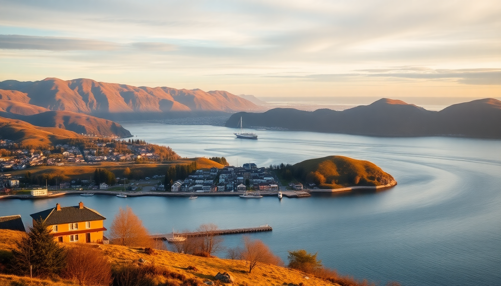

Best Day Trips from Oslo: Fjords, Vikings & Skiing

I spent a week based in Oslo, and the best part was getting out of the city every day. You don’t need a rental car or a cruise ship to see real fjords, touch a thousand-year-old Viking ship, or ski like a local. Here’s exactly how I did it, with honest opinions on what’s worth your time and what’s a tourist trap.
What is the best day trip from Oslo for first-time visitors?
If you only have one day outside Oslo, take the train to Flåm. It’s a long day — about two hours each way on the Bergen Railway — but the Flåm Railway itself is the main event. I booked the early morning train from Oslo S to Myrdal, then transferred to the Flåm line. The descent from mountain plateau to fjord level is steep, with waterfalls and tiny mountain farms you can almost touch from the window.
Once in Flåm village, you’ve got options. I skipped the touristy Viking Valley and went straight for a two-hour fjord cruise on the Aurlandsfjord. It’s calm, green water with sheer cliffs rising on both sides. No crowds in late September.
- Flåm Railway — book seat reservation in advance; window seats on the left side going down
- Aurlandsfjord cruise — runs from Flåm pier, 2-hour loop, no need to pre-book in shoulder season
- Ægir Brewery in Flåm — solid local beer and a decent lunch, but expect tourist prices
- Train from Oslo S — NSB regional trains are comfortable, with wifi and power outlets
Is the Oslofjord cruise worth it, or should I go further?
The Oslofjord is pretty, but it’s not dramatic like the fjords further west. I did a 3-hour guided cruise from Aker Brygge, and honestly, it felt like a lake tour with small islands. You see summer cabins and some rocky shores. If you’ve never seen a fjord, it’s fine. But if you’re going to Flåm or Bergen anyway, skip the Oslofjord cruise entirely.
What is worth it: the ferry to the islands. I took the B1 ferry from Vippetangen to Hovedøya. It’s a 10-minute ride, costs the same as a regular tram ticket, and gives you a genuine local beach vibe. I walked the island’s perimeter in an hour, found a quiet spot near the old monastery ruins, and had a picnic. No crowds, no commentary, just real Oslo.
- Hovedøya — free, quiet, great for a half-day escape
- Aker Brygge — tourist central; skip the overpriced restaurants here
- B1 ferry — use your Ruter transit card, same as bus or tram
What can I see on Bygdøy peninsula in half a day?
Bygdøy is where Oslo puts its best museums. I dedicated one morning to it, and it was enough to see three places without rushing. Start at the Viking Ship Museum — it’s small, but the three original ships (Oseberg, Gokstad, Tune) are genuinely impressive. You can see the wood grain and carved animal heads up close. No replicas, no gimmicks.
Then walk 10 minutes to the Fram Museum. This is the actual ship used by Fridtjof Nansen and Roald Amundsen for polar expeditions. You can go inside, climb onto the deck, and see the cramped quarters. I spent more time here than expected because it tells a real story of survival.
Skip the Kon-Tiki Museum unless you’re obsessed with Thor Heyerdahl. It’s one raft in a dark room. The Norwegian Maritime Museum next door is also skippable unless you’re a shipping nerd.
- Viking Ship Museum — small, focused, essential. Allow 45 minutes
- Fram Museum — interactive, well-curated, allow 1.5 hours
- Bygdøy Royal Estate — nice grounds for a walk between museums
- Lunch at Huk beach kiosk — simple hot dogs and ice cream, cheap by Oslo standards
How do I get to Holmenkollen for skiing or just the view?
Holmenkollen is 30 minutes from central Oslo by metro. I took line 1 from Majorstuen to the end station, then walked uphill 5 minutes to the ski jump. The ski jump itself is an architectural monster — you can take an elevator to the top and look down the ramp. I’m not a skier, but even I got vertigo.
In winter, there are actual cross-country ski trails right from the metro station. I rented skis from the Holmenkollen Ski Lodge for 350 NOK (about $33) for half a day. The trails are groomed and marked, with easy loops for beginners. If you’re there in summer, the ski jump has a zipline and a bobsled track that runs on wheels.
- Holmenkollen Ski Jump — entrance fee includes museum and top platform
- Cross-country trails — free to use; rent skis at the lodge
- Tryvann Winter Park — alpine skiing, 15 minutes bus from Holmenkollen
- Frognerseteren restaurant — traditional Norwegian food, apple cake is legit
Are there any hidden gems near Oslo that most tourists miss?
Yes. Take the train from Oslo S to Moss (45 minutes), then a bus to the Viking Ship replicas at Tønsberg. But honestly, the most underrated day trip is the Munch Museum in Oslo itself. It’s not a day trip from Oslo, it’s in Oslo, but most tourists skip it for the fjord. Don’t. The new building on Bjørvika has multiple floors of Edvard Munch’s work, including three versions of The Scream. I spent two hours there and barely scratched the surface.
For a real off-the-beaten-path fjord experience, take the bus from Oslo to Drammen, then the local train to Kongsberg. The valley between Drammen and Kongsberg has narrow river gorges and old silver mines. The Norwegian Mining Museum in Kongsberg is surprisingly good — you can go underground into a real 17th-century silver mine.
- Munch Museum — open late Thursday, fewer crowds then
- Kongsberg Silver Mines — guided tours run hourly; wear warm clothes underground
- Drammen river walk — nice for a short stop, has a good bakery called Baker Hansen
What should I eat and where should I stay in Oslo?
For food, I ate well without spending a fortune. Fuglen in Grünerløkka has excellent coffee and a tiny menu of Scandinavian small plates. Mathallen food hall near Schous Plass gives you 20 different stalls — I had reindeer stew from Vulkan and it was the best meal of my trip. Avoid the tourist trap restaurants on Karl Johans gate; they’re overpriced and mediocre.
For lodging, I stayed at Hotel Verdene in the Grønland neighborhood. It’s a no-frills boutique hotel, clean, and a 10-minute walk to the central station. The breakfast buffet was better than expected — smoked salmon, fresh bread, and proper coffee. If you want something closer to the water, Thon Hotel Opera is right next to Oslo S but costs double.
- Fuglen — coffee and cocktails, Grünerløkka
- Mathallen — food hall, open until 22:00
- Hotel Verdene — mid-range, good value
- Thon Hotel Opera — convenient but pricey
FAQ
Can I see the Northern Lights on a day trip from Oslo? No. Oslo is too far south and has too much light pollution. You need to go to Tromsø or the Lofoten Islands for reliable aurora sightings. Save it for a dedicated trip.
Is a fjord cruise from Oslo worth the money? Only if you take the train to Flåm and do the Sognefjord cruise there. The Oslofjord cruise from Aker Brygge is scenic but not dramatic. Spend your money on the Flåm Railway instead.
Do I need a car for day trips from Oslo? No. The train and metro system covers everything in this guide. A car is a hassle in Oslo and unnecessary for Flåm, Bygdøy, or Holmenkollen. Use public transit and save the rental for a road trip in western Norway.
Conclusion
- Flåm Railway + Aurlandsfjord cruise is the single best day trip from Oslo — book early for the train
- Bygdøy museums (Viking Ship and Fram) deserve a half-day; skip Kon-Tiki and Maritime Museum
- Holmenkollen is worth it even if you don’t ski — the view and the ski jump museum are enough
- Eat at Mathallen and Fuglen; avoid Karl Johans gate restaurants
- Stay at Hotel Verdene for value or Thon Hotel Opera for convenience; skip the Oslofjord cruise